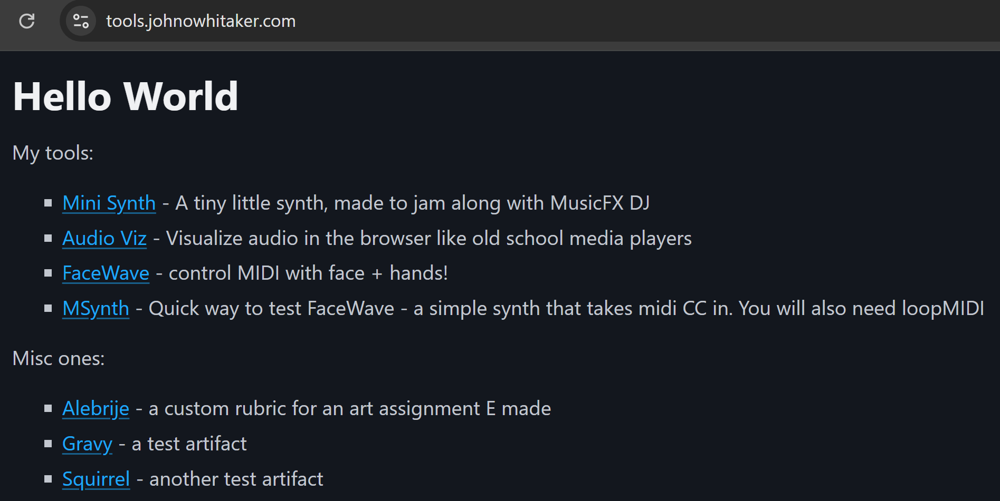

Deploy Your Artifacts!
I’m a big fan of the idea of Sharing Scrappy Fiddles.
I’m always trying to do this more - sharing WIPs on X, writing up TILs on our internal blog for my colleagues, keeping up this blog…
One new category of things I haven’t know how/where to share are bits of ephemeral software I make with LLMs. Specifically Claude’s artifacts tool - it makes it easy to whip up a fun little web app for all sorts of things, but has no easy ‘share’ button to spread that around. It’s strange since I feel less ownership of these tools, but they do often involve a fair amount of back and forth. And I’ve noticed that if I DO deploy them (this post will show you how) I often end up tweaking them more and feeling like they’re really mine, as opposed to playing with the v1 for a sec and disguarding it.
Anthropic has some specific libraries and a build process that I hadn’t seen documented for Artifacts, so for any that weren’t plain HTML+vanilla JS, I had thought it would be very involved to get a locally-running version. Thankfully, SImon Willison’s [fantastic post] led me to this tool: claude-artifact-runner by Claudio Silva. You can copy the artifact code into a file (artifact-component.tsx), run the build command (npx vite build IIRC) and then you have a dist/ folder with the built artifact. Once there, you can host this in a variety of ways. I have mine set up with a little FastHTML site (source) since I plan to add other tools in the near future. This is running on a Nanode 1 GB from Linode - $5/month. Fun, and not too bad to set up, not a great option if you don’t want to go down the rabbit hole of setting up a server.

An easier option is to take the built artifact and pop it into a github repository. Here’s an example. As long as there’s an index.html file in the route you can open up the “Pages” section of the repo settings and tell it to build from the main branch. This will give you a github pages site like https://johnowhitaker.github.io/minisynth/ that you can share with anyone. It’s free and easy, and you can pop the artifact source code in there too to have a reference for yourself or others.
Of course, neither of these options are seamless, and there’s a lot of room for improvement. I like the look of GitHub Sparks, which are easy-to-create apps with some kind of DB for storage and trivial to share. Replit’s Agents make things you can deploy and share on there too, but aren’t free. And Val.town has their ‘Townie’ bot that also suits some kinds of software.
These little one-shot mini apps aren’t always great, but when you need something constrained and specific I think it’s magical that you can conjure it up with a short conversation. And now, hopefully, you can see how to share it easily too.
PS: Here’s how I add a bunch of static artifacts to their own routes on tools.johnowhitaker.com in FastHTML:
static_apps_dir = Path(__file__).parent / "static_apps"
print(static_apps_dir)
for path in static_apps_dir.glob("*"):
if path.is_dir():
app_name = path.name
print(f"Adding route: /{app_name}")
@app.get(f'/{app_name}')
def serve_index(app_name: str = app_name):
return FileResponse(static_apps_dir / app_name / 'index.html')
for asset in (path/'assets').glob("*"):
asset_name = asset.name
print(f"Adding asset: {app_name}/{asset_name}")
@app.get(f'/assets/{app_name}/{asset_name}')
def serve_asset(asset_name: str = asset_name, app_name: str = app_name):
return FileResponse(static_apps_dir / app_name / 'assets' / asset_name)
# Modify the index.html to use the asset path with the app name
index_html = (static_apps_dir / app_name / 'index.html').read_text()
index_html = index_html.replace('src="/assets/index', f'src="/assets/{app_name}/index')
index_html = index_html.replace('href="/assets/index', f'href="/assets/{app_name}/index')
(static_apps_dir / app_name / 'index.html').write_text(index_html)This means I can simply add the latest new artifact to the static_apps folder and it will be served at tools.johnowhitaker.com/artifact_name. Almost painless :) I might feature one or two more soon, there’s one that started as a quick demo and is turning into a very fun tool.